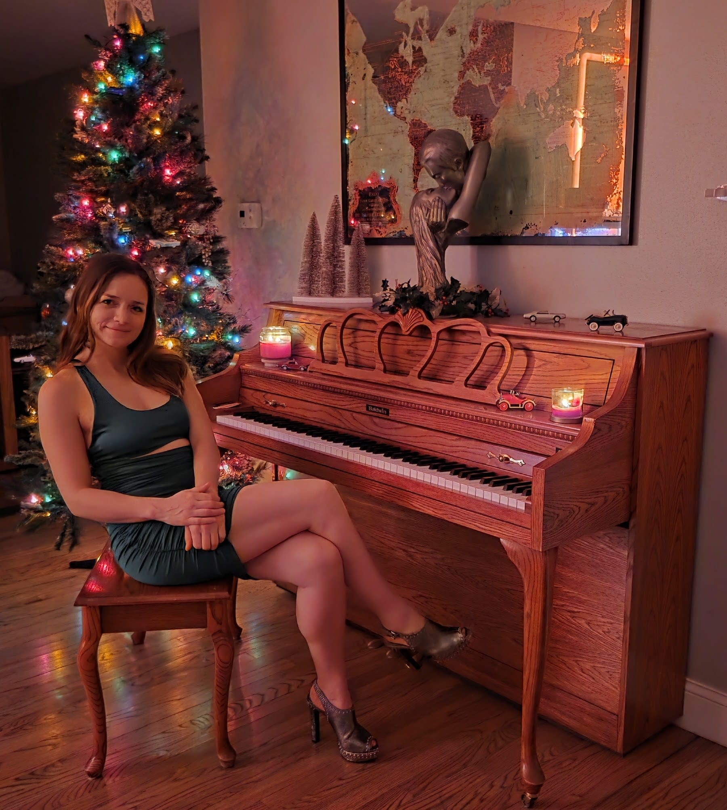

The cocktail lounge
BOOK LIVE MUSIC IN COLORADO
Hotels, restaurants and lounges
You know the moment on a quiet night when your guests start asking for the check. A musician on your floor can give them a reason to stay for one more round.
We bring the same solo or duo act to your lobby bar, restaurant or lounge on the same night each week. We also book single dates for lobby events and the holidays.
Trusted and booked by
“Gary is an amazing musician, reliable and easy to work with. Fans love Keepin' It Dirty with these guys and will show up to support! I book them multiple times a month to keep our patio packed during patio season... perfect for any venue or event!”
The program
In 2024, researchers at an Italian restaurant in Tel Aviv changed the tempo of the background music and timed 282 tables. They kept the same food, the same staff and the same prices.
In a 1986 study at an American restaurant, guests on slow-music nights ordered more drinks.
A musician can watch who’s at the bar and pick the next song for them.
You can read the full research, with every source, in our post on why restaurants have live music.
The acts
Solo and duo acts who sound good at conversation level. Here are a few who fit a weekly night.
The cocktail lounge

The lobby bar
2025 Hey Nonny Songwriting Contest winner

Jazz piano and vocals
The restaurant bar

Patio season
2026 Josie Music Award winner

Blues and roots

Lounge nights

Dinner service
Music in Patagonia and Yeti films
“Roma Ransom was perfect for dinner service in our restaurant Sacred Grounds Cafe and Wine bar... We would recommend them to everybody and we booked them as many nights as they want.”
Video clips
A few of the acts above, live.
Getting started

One night or one season
We also book a musician for one evening or a short run of dates, like a winter market in your lobby, a tree lighting, Thanksgiving dinner or New Year’s Eve.
“To say that our guests adored [her] would be an understatement. After an experience with entertainers at our upscale resort venue that we had to let go, [she] swooped in and saved the day with her eclectic mix of music from every era and style! Along with her drummer, she played music that set a great tone and was a perfect fit for our guests. I highly recommend [her] music.”
Just tell us a little about your venue and we'll take it from there.
If you’d rather ask something first, email hello@signetartists.com.